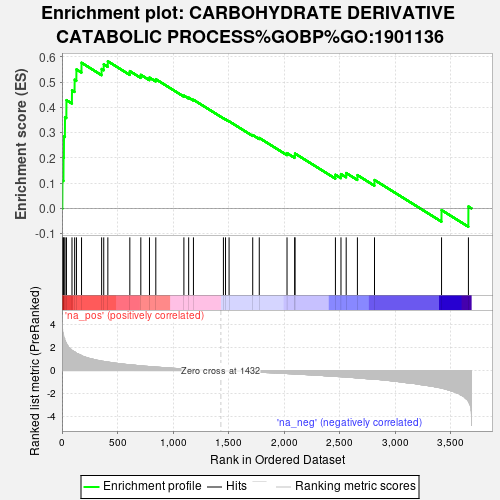

| | | Dataset | TNBC_vs_Healthy_ranks |
| Phenotype | NoPhenotypeAvailable |
| Upregulated in class | na_pos |
| GeneSet | CARBOHYDRATE DERIVATIVE CATABOLIC PROCESS%GOBP%GO:1901136 |
| Enrichment Score (ES) | 0.58298904 |
| Normalized Enrichment Score (NES) | 2.0597155 |
| Nominal p-value | 0.0 |
| FDR q-value | 0.018049128 |
| FWER p-Value | 0.105 |
Table: GSEA Results Summary

Fig 1: Enrichment plot: CARBOHYDRATE DERIVATIVE CATABOLIC PROCESS%GOBP%GO:1901136
Profile of the Running ES Score & Positions of GeneSet Members on the Rank Ordered List
| SYMBOL | RANK IN GENE LIST | RANK METRIC SCORE | RUNNING ES | CORE ENRICHMENT | | 1 | HK3 | 4 | 3.742 | 0.1109 | Yes |
| 2 | CD44 | 14 | 3.099 | 0.2012 | Yes |
| 3 | PKM | 18 | 2.845 | 0.2855 | Yes |
| 4 | ENPP4 | 27 | 2.611 | 0.3614 | Yes |
| 5 | HK2 | 40 | 2.368 | 0.4290 | Yes |
| 6 | GALC | 90 | 1.748 | 0.4679 | Yes |
| 7 | CDA | 114 | 1.614 | 0.5099 | Yes |
| 8 | GNS | 130 | 1.501 | 0.5507 | Yes |
| 9 | APOBEC3C | 176 | 1.296 | 0.5772 | Yes |
| 10 | HK1 | 357 | 0.815 | 0.5523 | Yes |
| 11 | PGAM1 | 376 | 0.788 | 0.5710 | Yes |
| 12 | GM2A | 413 | 0.730 | 0.5830 | Yes |
| 13 | SGSH | 611 | 0.497 | 0.5440 | No |
| 14 | NT5C | 710 | 0.405 | 0.5293 | No |
| 15 | APOBEC3G | 788 | 0.340 | 0.5184 | No |
| 16 | NEU1 | 845 | 0.298 | 0.5120 | No |
| 17 | NUDT4 | 1098 | 0.133 | 0.4470 | No |
| 18 | NUDT15 | 1141 | 0.116 | 0.4390 | No |
| 19 | NAGA | 1184 | 0.099 | 0.4305 | No |
| 20 | HPRT1 | 1454 | -0.012 | 0.3573 | No |
| 21 | ENTPD7 | 1473 | -0.018 | 0.3529 | No |
| 22 | HEXB | 1505 | -0.027 | 0.3452 | No |
| 23 | FOXK2 | 1718 | -0.117 | 0.2907 | No |
| 24 | NUDT3 | 1777 | -0.150 | 0.2793 | No |
| 25 | CDADC1 | 2027 | -0.260 | 0.2190 | No |
| 26 | NUDT1 | 2096 | -0.294 | 0.2092 | No |
| 27 | TDG | 2099 | -0.295 | 0.2175 | No |
| 28 | FUCA2 | 2463 | -0.508 | 0.1334 | No |
| 29 | HINT1 | 2513 | -0.534 | 0.1360 | No |
| 30 | PFKM | 2560 | -0.561 | 0.1402 | No |
| 31 | ALDOC | 2661 | -0.640 | 0.1320 | No |
| 32 | GNPDA1 | 2815 | -0.750 | 0.1126 | No |
| 33 | SMUG1 | 3419 | -1.530 | -0.0066 | No |
| 34 | DUT | 3661 | -2.678 | 0.0077 | No |
Table: GSEA details [plain text format]
Fig 2: CARBOHYDRATE DERIVATIVE CATABOLIC PROCESS%GOBP%GO:1901136: Random ES distribution
Gene set null distribution of ES for CARBOHYDRATE DERIVATIVE CATABOLIC PROCESS%GOBP%GO:1901136